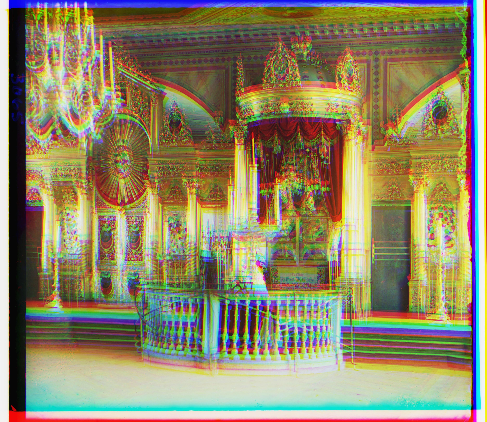

The goal of this assignment is to take the digitized Prokudin-Gorskii glass plate images and, using image processing techniques, automatically produce a color image with as few visual artifacts as possible. In order to do this, I extracted the three color channel images, placed them on top of each other, and aligned them so that they form a single RGB color image. After stacking, I used other methods to improve the quality of the images including the constast.
There are a few stages in the process I ended up using:
1. Channel Split into 3 parts
2. Stacking the images to form one colored image
3. Aligning the image using NCC or Pyramid
4. Cropping the borders of the image
5. Using Automatic Edge Detection (Bells and Whistle)
6. Using Automatic Contrasting (Bells and Whistle)
For the low resolution, jpeg images, I used normalized cross-correlation (NCC) to align the photos. This method was fairly simple and intuitive. I used the method described in the project description- an exhaustive search, going over a 15-pixel-by-15-pixel window , and calculating the ncc, which is simply a dot product between two normalized vectors: (image1./||image1|| and image2./||image2||). I cropped the borders of the stacked image to eliminate outliers in the alignment from all sides of each color channel. The align function provides the optimal displacement co-ordinates for green and red layer keeping blue layer static, using NCC. Then I displaced the original image by the red and green co-ordinates produced by the align function to get the final colorized image.
For high resolution images, tif files, I used an image pyramid alignment of 5 layers for faster alinment and searching. In the image pyramid, each layer sizing down from the previous layer by a factor 2. It is meant to represent the image at multiple scales, and the processing is done sequentially starting from the coarsest scale (smallest image) and going down the pyramid, updating the total offsets (usinng NCC alignment) iteratively before finding the best offset in the next layer. This method proved to be very efficient and provided great results.
In order to improve the difference in color of the images, I defined a function that would take in an image and rescale the image after stretching or shrinking its intensity levels. I did this by calculating the pixel values at the 10.5 percentile and the 80.5 percentile and used the function mentioned to scale the values in the array to the range between the percentile range provided. The results show a drastic change in intensity levels of the image and sometimes provide an aesthetic appeal.
As shown in the Colorized Emir and Melons images using Pyramid Alignment, the photos lack accurate alignment due to difference in brightness of the channels in the images. This motivated me to use an edge detection function in order to align the images properly. I used OpenCV's Canny edge detection algorithm, which finds edges in the input image and marks them in the output map edges using the Canny algorithm.



1. I noticed that after stacking the 3 channels, the alignment was extremely noisy and some color channels had different borders to others. This innaccuracy affected my algorithm and prevented it from returning clean results in some
cases. Therefore, I cropped the borders of the stacked image to eliminate outliers in the alignment from all sides of each color channel and then aligned the image.
2. Another issue I faced was with melons.tif and emir.tif where the pyramid function with 5 levels wasn't able to provide clean and precise images. Therefore, I used the Canny edge detection algorithm in order to align the channels properly.